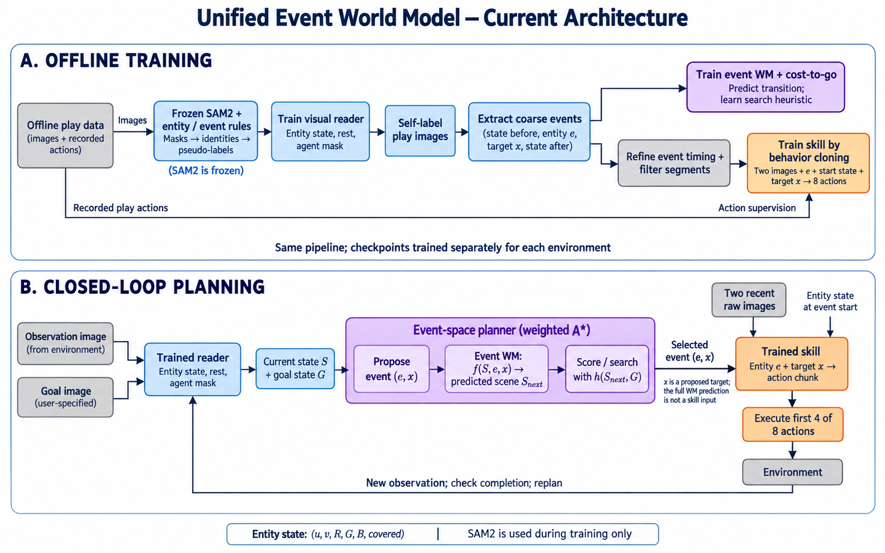

Từ ảnh đến event,
từ event đến hành động.
Bộ demo của pipeline unified hiện tại: ảnh được đọc thành trạng thái entity, planner tìm chuỗi event, skill thực hiện từng event bằng action.
Ngày 05/10/2026 · Cube-triple và ví dụ event puzzle-4×5 · Tài liệu để trình bày tiến độ research
Kiến trúc đang chạy

Một event trông như thế nào?
Một event ghi lại chuyển đổi giữa hai trạng thái ổn định. Chọn ví dụ để xem ảnh trước–trong–sau và một clip ngắn có mốc event.
Mốc thời gian, entity ID và nhãn tác động được suy luận từ ảnh. Ví dụ được giữ bởi bộ lọc chưa đồng nghĩa đã xác nhận chính xác bằng ground truth.
Planner chọn chuỗi event nào?
Chọn task rồi đi qua từng event. Chấm bên dưới là trạng thái entity trong ảnh 64×64: ảnh ban đầu được reader đọc, WM dự đoán các trạng thái kế tiếp, và ảnh goal được reader đọc riêng.
Closed-loop thành công
Task 1 · một event
Video có ảnh quan sát ở trái, ảnh goal ở phải; thanh dưới ghi event planner chọn và tọa độ đích.
Nguồn: replay CPU job 57497, cùng reader / WM / skill với reference GPU. Replay này thành công sau 66 bước; reference cũng thành công, sau 69 bước.
Ở trạng thái khởi đầu này, reader, planner và skill phối hợp đưa simulator tới goal. Một clip thành công không đại diện cho tỷ lệ toàn bộ task.
Failure và bằng chứng chẩn đoán
Task 5 · fallback và replan
Đã thấy: planner không tìm được plan hoàn chỉnh trong ngân sách của các lần gọi được log; robot thực hiện các event fallback rồi lập lại kế hoạch.
Chưa xác định: mức đóng góp của sai số WM, heuristic, ngân sách search, reader và skill trong failure này. Không quy toàn bộ lỗi cho riêng skill.
Sai lệch vị trí ở các mốc kết thúc event là khoảng cách theo reader 2D, không phải độ lệch vật lý thật; một mốc kết thúc cũng có thể do entity khác thay đổi.
Xem chẩn đoán các mốc kết thúc event
| Entity | Đích (u,v) | Reader tại mốc kết thúc | Sai lệch | Entity khác đổi |
|---|
Kết quả tổng hợp và giới hạn so sánh
Reference GPU cube-triple: 8/30 = 26,7%. Một checkpoint, development env seed 0, 6 episode trên mỗi official task. Các clip replay không làm thay đổi số này.
| Task | Thành công reference GPU | Planning trong demo | Closed-loop trong demo |
|---|
Nhãn event và dữ liệu skill
Cube-triple: 33,2% đoạn train bị loại sau refine.
Puzzle-4×5: 96,0% bị loại; còn 240/6.053 đoạn.
Flag của bộ lọc không phải xác nhận event sai. Metric overlap precision 100% không đo đúng ranh giới hay việc gộp nhiều thao tác.
Tham chiếu baseline
OGBench pixel cube-triple: HIQL 21%; puzzle-4×5: GCIVL 17%.
Chưa có comparison matched: method có SAM2 pretraining, số episode / training seed và lượng dữ liệu khác. Unified cube dùng prefix khoảng 1M transitions, trong khi dataset cube-triple chuẩn có 3M. Không dùng 26,7% để khẳng định đã vượt baseline.
Paper OGBenchKết quả puzzle chuyên biệt trước đây
Puzzle-4×5: 99/100 trên env seed mới; 4×6: 100/100. Đây là pipeline code bật/tắt và event kiểu đổi bit, không phải unified entity pipeline đang demo. Mỗi cấu hình có một training seed; chưa chứng minh transfer sang task khác.
Replay nhiều bước: task 2 và khác biệt CPU / GPU
Task 2 episode 0: replay CPU thành công sau 472 bước, còn reference GPU thất bại sau 1.000 bước ở cùng seed. Clip được giữ để minh họa replan; không cộng thành một benchmark success mới. Nguyên nhân khác biệt chưa được kiểm chứng riêng.
Tải clip task 2 bổ sungHướng dẫn trình bày 4–5 phútDữ liệu và provenanceSource exporter
Dữ liệu skill lấy từ action trong play; ảnh goal là goal specification của benchmark. Trạng thái simulator privileged chỉ xuất hiện trong log chẩn đoán gốc, không đưa vào policy và không dùng để tạo prediction trong bộ demo này. Các task 3/4 mới xuất planning trên ảnh reset, chưa có video execution mới.